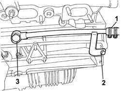
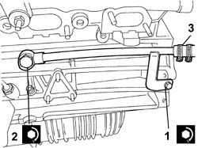

2130A76 Rigid coolant return pipe to engine crankcase from flexible pipe on automatic transmission fluid heat exchanger
- Path
- Procedures > 21 GEARBOX > 2130 AUTOMATIC TRANSMISSION AND DIFFERENTIAL > 2130A AUTOMATIC TRANSMISSION ASSEMBLY > 2130A76 Rigid coolant return pipe to engine crankcase from flexible pipe on automatic transmission fluid heat exchanger
- Kind
- repair procedure (removal / refitting; the operation number is the code)
- Applies to
- engines: 3.0 V6, 3.2 V6; all production periods
- Interactive page
- https://sloeber94.github.io/elrnDB-lThss/en/#/190178
Applies to: engines: 3.0 V6, 3.2 V6; all production periods
 Removing
Removing
 Refitting
RefittingSee in Op. 1080B38 LEFT CATALYTIC PRECONVERTER - R.R. or Replace Gasket
- Prepare a suitable container for collecting the engine coolant.
1. Open the retaining band between the flexible pipe coming from the heat exchanger and the rigid supply pipe to the crankcase and collect the engine coolant.
2. Undo the bolt fixing the rigid pipe support plate.
3. Undo the connector on the crankcase and remove the copper washers and pipe underneath.

Applies to: engines: 3.0 V6, 3.2 V6; all production periods
Refitting
Removing- Position the rigid pipe and copper washers and partly tighten the connector securing them to the crankcase.
1. Tighten the bolts fixing the rigid pipe support plate to the recommended torque.
 | Value - daNm | Fastening | Component | Ø |
|---|---|---|---|---|
1 | 1.5 | Bolt | PIPE TO CYLINDER BLOCK/CRANKCASE FIXING, BOLT | M8 |
2. Tighten the connector on the crankcase to the recommended torque.
| Value - daNm | Fastening | Component | Ø |
|---|---|---|---|---|
. | 4 | Connector | CRANKCASE RIGID WATER RETURN PIPE | M16 X 1.5 |
3. Connect the flexible and rigid pipes and close the band.

Applies to: engines: 3.0 V6, 3.2 V6; all production periods
See in Op. 1080B38 LEFT CATALYTIC PRECONVERTER - R.R. or Replace Gasket
See in Op. 0010T21 ENGINE COOLANT - Check density and top up if necessary
- [0010T21]